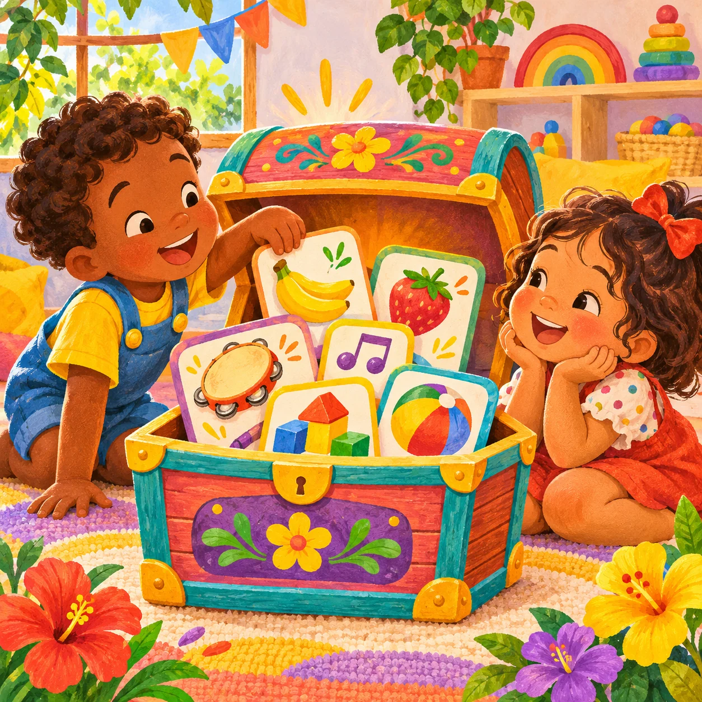

NÍVEL 0 · BEBÊS
Acolher cada bebê do seu jeito
Ritmos, gestos e formas de comunicação também são diferenças.
Conhecer as diferenças e aprender a conviver com respeito começa nas relações do dia a dia. O exemplo dos adultos ajuda as crianças a construir essa aprendizagem.
Ritmos, gestos e formas de comunicação também são diferenças.
Sabores, músicas e brincadeiras para compartilhar e criar vínculos.
Como acolher o “não gosto” e mediar as relações entre crianças.
Três situações para pensar no papel dos adultos.
Vídeo curto e sugestões para conversar em família.
Histórias, criações, sabores e uma mostra pedagógica.
Ritmos, gestos e formas de comunicação também são diferenças.
É normal que os bebês sejam diferentes. Cada um tem seu jeito de olhar, se movimentar, demonstrar interesse e se comunicar. Um pode observar mais; outro pode buscar mais interação. Não existe um jeito melhor ou pior: essas diferenças fazem parte de quem cada bebê é. Quando respeitamos o ritmo de cada criança, ela se sente acolhida sem precisar ser comparada com ninguém.
Observe as três situações ilustradas. Elas são exemplos de como os bebês podem demonstrar interesse, preferência ou vontade de se aproximar.
👆 Toque em cada imagem para abrir a explicação. Toque nela novamente para fechar.
As setas ligam exemplos: não indicam uma ordem ou etapa que todos os bebês devam seguir.
Evite frases como “seu irmão já fazia isso” ou “olha como o outro bebê faz”. Cada criança tem seu tempo e seu jeito. Em vez de comparar, reconheça o que você observa nela: “Hoje você ficou olhando a música por mais tempo.”
O olhar pedagógico valoriza o percurso de cada bebê, em vez de medir uma criança pela outra. A equipe observa a criança em diferentes situações, reconhece suas formas de expressão e organiza experiências para que todas possam se sentir acolhidas e participar, respeitando suas singularidades.
Descobrindo gostos e criando vínculos na convivência.
Na faixa de 1 a 2 anos, os vínculos podem crescer nas experiências de cuidado e brincadeira: procurar um colega, trocar sorrisos, brincar perto ou compartilhar uma descoberta. As crianças não precisam ter a mesma cor de pele, o mesmo tipo de cabelo, a mesma origem ou condição econômica para se aproximar e criar afeição. Cada criança é única, e todas merecem participar e fazer parte do grupo.
Vamos abrir o baú e escolher uma ideia para compartilhar. A criança pode apontar, escolher, olhar ou participar do jeito dela.
✨ As cartinhas parecem sair do baú. Toque em uma para abrir; toque novamente para fechar.

✨ Ideias para viver juntos💛 Depois, convide as crianças a compartilhar uma das escolhas. A amizade pode crescer na convivência e no carinho — não depende de terem a mesma aparência, origem ou condição econômica.
Valorize as aproximações: “Você gosta de brincar com seu colega. Que bom que vocês estão compartilhando esse momento!” Se surgir uma fala que exclui alguém pela aparência ou origem, intervenha com calma e firmeza: “Aqui todos podem brincar juntos; ninguém fica de fora por ser diferente.”
No Nível 1, o foco é apoiar vínculos por meio de interações cuidadosas, brincadeiras compartilhadas e experiências em pequenos grupos. Não se espera que crianças tão pequenas expliquem ideias adultas sobre preconceito; cabe aos adultos modelar acolhimento, observar as relações e não reforçar exclusões por aparência, origem étnica ou condição social.
Entre 2 e 3 anos, aprender a dizer o que gosta e a conviver com os outros.
Entre 2 e 3 anos, é comum que as crianças comecem a expressar com mais clareza suas preferências: o que querem comer, vestir, brincar e com quem gostam de estar. “Eca”, “não gosto” e “não quero” aparecem enquanto aprendem a dizer o que sentem e desejam. Nessa mesma fase, ainda estão aprendendo a esperar, dividir, cuidar do outro e lidar com frustrações. Às vezes, podem afastar um colega depois de um conflito — como uma mordida ou um empurrão — ou por algo que consideram diferente. Isso não define a criança nem deve virar rótulo: é um momento em que a presença da família e da equipe pedagógica faz diferença para acolher sentimentos, proteger todos e ensinar outras formas de conviver.
👆 Leia os balõezinhos e converse sobre o que os adultos podem fazer em cada situação.
💛 Uma criança pode não querer brincar junto naquele momento. O adulto acolhe esse sentimento, protege todos e acompanha novas aproximações sem forçar amizade.
Toque nas cartinhas para abrir uma resposta possível. Toque novamente para fechar.
Não chame a criança de “mordedora”, “agressiva” ou “malcriada”, nem diga ao grupo para excluí-la. Coloque limites para proteger todos, ensine outra forma de comunicar o que deseja e converse com a família em particular. Se a questão for roupa ou higiene, acolha sem expor a criança.
Nessa faixa etária, preferências e escolhas estão em construção, assim como a capacidade de lidar com conflitos. A mediação adulta precisa proteger quem foi atingido, reconhecer os sentimentos envolvidos e ensinar alternativas, sem fixar rótulos sobre nenhuma criança. A equipe observa situações e contextos, ajusta o ambiente e dialoga com as famílias para criar orientações cuidadosas e coerentes. A aproximação entre crianças é incentivada, mas não forçada.
Três situações-problema para pensar junto com a criança.
Entre 3 e 4 anos, a criança amplia sua autonomia, afirma preferências e quer participar das escolhas. Pode dizer “não quero sentar perto”, “não vou dar a mão” ou “não quero dividir”. Está aprendendo a comunicar vontades, negociar e considerar o outro. Isso não significa que “sabe tudo”: ela ainda precisa da presença adulta para compreender limites, sentimentos e formas respeitosas de conviver. As crianças também observam e repetem comentários que escutam. Falas sobre um colega “sempre vir sujo”, “ter piolho” ou “bater” podem virar rótulos e alimentar afastamentos. Questões de cuidado e saúde devem ser conversadas entre adultos, em particular.
Leia cada situação, escolha uma resposta e veja o que pode acontecer. Não há necessidade de obrigar amizade ou contato físico; o adulto protege, orienta e amplia as possibilidades de participação.
Uma criança afasta um colega e diz que ele não é bom na brincadeira. Como o adulto pode intervir?
Perto das crianças, um adulto comenta: “Aquela criança sempre vem suja”, “tem piolho” ou “bate”. Depois, uma criança repete o comentário sobre o colega. O que fazer?
A criança não quer segurar a mão de um colega e está com um brinquedo usado pelo grupo. Como equilibrar escolha, respeito e participação?
As crianças repetem palavras que ouvem. Se um comentário sobre roupa, piolho ou comportamento puder afetar um colega, converse sobre isso longe das crianças e sem expor nomes. Trate as necessidades de cuidado com respeito e em parceria com a equipe e a família.
Autonomia e convivência estão sendo construídas ao mesmo tempo. O adulto reconhece as preferências sem permitir humilhação ou exclusão; respeita limites corporais, mas cria caminhos para que todos participem. A forma como família e equipe falam das crianças também ensina o grupo a olhar para elas.
Vídeo curto e conversa em família.
Na infância, as crianças estão construindo a compreensão sobre as diferenças e as relações entre as pessoas. Podem repetir palavras e atitudes que escutam sem compreender todo o seu peso — mas essas falas ainda podem machucar. Preconceitos e rótulos não nascem prontos: são aprendidos e reforçados nas vivências, em casa, na escola e nos outros espaços de convivência. Por isso, o exemplo dos adultos faz diferença.
Assista ao vídeo “Diferentes e Especiais”, do canal Nina Imagina. Depois, escolha uma pergunta para conversar com a criança:
👆 Depois do vídeo, toque em uma pergunta para abrir uma ideia de conversa.
Tenha cuidado com o que falamos perto das crianças. Comentários sobre cor da pele, cabelo, roupa, origem, condição econômica, deficiência ou comportamento podem virar rótulos, mesmo quando achamos que a criança não está prestando atenção. Muitas vezes, ela apenas repete algo que ouviu; ainda assim, precisamos explicar com carinho por que aquela fala pode excluir ou machucar.
Isso não é para culpar as famílias, e sim para lembrar que nosso exemplo ensina. As crianças aprendem tanto com as palavras quanto com as atitudes de acolhimento, amizade e respeito que vivem em casa e na escola.
As crianças percebem diferenças e vão construindo sentidos sobre elas nas interações e nas experiências que vivem. Por isso, não basta esperar que “aprendam sozinhas”: família e equipe precisam oferecer referências respeitosas, interromper discriminações e valorizar a diversidade no cotidiano. A criança que repete uma fala não deve ser rotulada; a fala precisa ser orientada e a pessoa atingida, acolhida.
Uma vivência da turma do Infantil 2A, com as professoras Doralice Fontinelle e Rosa Maria, na Semana dos Povos Indígenas.
Com as professoras Doralice Fontinelle e Rosa Maria, as crianças do Infantil 2A participaram de uma sequência de experiências sobre os povos indígenas. A turma ouviu uma história, conheceu imagens em livros, explorou criações e sons, experimentou alimentos, fez pinturas e cocares e, ao final, compartilhou suas produções em uma mostra pedagógica no CMEI.
Toque em cada etapa para conhecer um pouco mais do percurso. Toque novamente para fechar.
Ao conversar com a criança, valorize a curiosidade e explique que existem muitos povos indígenas, com histórias, línguas e modos de vida diversos. Fale dessas culturas no presente e evite tratar uma atividade de sala como se representasse todos os povos.
A sequência reuniu escuta, observação, exploração de materiais, experiências sensoriais, expressão artística e partilha. A mostra pedagógica deu visibilidade ao percurso das crianças e permitiu que elas revisitassem e comunicassem suas aprendizagens. A abordagem respeitosa reconhece a diversidade entre os povos indígenas e evita generalizações.
Relato organizado a partir das informações compartilhadas pela equipe do CMEI.